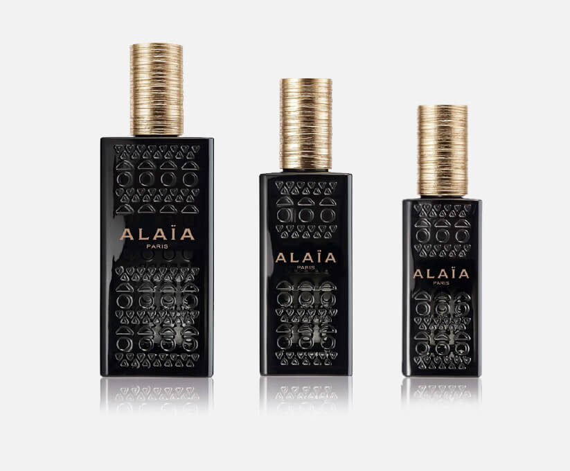

<!DOCTYPE html>
<html>
<head lang="en">
    <meta http-equiv="Content-Type" content="text/html; charset=utf-8">
    <title>阿莱亚ALAIA-我的香水</title>
    <meta name="viewport" content="width=device-width, initial-scale=1, maximum-scale=1, user-scalable=no, minimal-ui" >
    <meta name="msapplication-tap-highlight" content="no">
    <meta name="apple-mobile-web-app-capable" content="yes">
    <link rel="stylesheet" type="text/css" href="css/screen.css?v=1.0"/>
</head>
<body class="page-fragrance">
    <div class="wrapper">
        <h2 class="title">
            我的香水
        </h2>
        <div class="content-fragrance">
            
            <div class="phase-1 brown-font">
                “调制一款香水，如同向心上女郎倾诉衷肠，将美好期许娓娓道出，又在她回眸之前悄然退去。这一刻，内心秘密化作字句，无所追溯……我的香水并非理智结出的果实，它拥有改写时间的魔力……”
                <div class="name">
                    ——阿泽丁·阿莱亚Azzedine Alaïa
                </div>
            </div>
            <div class="content">
                <p class="brown-font">
                    香迹
                </p>
                <p>清香：沁人心脾，略带红胡椒香气</p>
                <p>花香：小苍兰与牡丹</p>
                <p>肤香：麝香与动物香调</p>
                <br>
                <p>
                    芬美意调香师Marie Salamagne深深了解阿泽丁·阿莱亚Azzedine Alaïa的期待——如同冰水滴落滚烫石灰。她解释道:“我以精心调制的配方来诠释这一情境：首先是清新似水的矿物香调；随后在一天之内选定浑然融合的中调；直觉告诉我，这款香水必须诞生于明暗暧昧的氛围中，少些天真无辜，多些麝香散发的动物气息。”
                </p>
                <br>
                <p class="brown-font">
                    香水瓶
                </p>
                <p>
                    这款黑色半透明香水瓶由阿泽丁·阿莱亚Azzedine Alaïa与设计师Martin Szekely携手打造，瓶身饰以品牌标志图案，也就是在八十年代皮革紧身衣系列中亮相的镂空花饰。香水瓶盖宛若金丝缠绕而成。包装盒采用阿泽丁·阿莱亚Azzedine Alaïa最擅用的裸色调，黑色字体成熟大方。
                </p>
                <br>
                <p class="brown-font">
                    灵感
                </p>
                <p>
                    阿泽丁·阿莱亚Azzedine Alaïa发挥与以往相似的创作手法，推出首款Alaïa Paris香水。<br>
                    Alaïa的品牌美学可谓名副其实的女权宣言。<br>
                    “阿泽丁·阿莱亚Azzedine Alaïa将女性的婀娜身躯作为雕塑艺术的主题”，Carla Sozzani表示，“他与女性的关系无可比拟：他不仅欣赏女性，更令她们美上加美，对身体充满自信。正如意大利俗语所说，Sicurezza da bellezza（美丽无虞）。”<br>
                    通过这款Alaïa Paris香水，阿泽丁·阿莱亚Azzedine Alaïa延续波德莱尔式的探索之旅，追求永无止境的艺术高度。
                </p>
            </div>
        </div>
    </div>
</body>
</html>